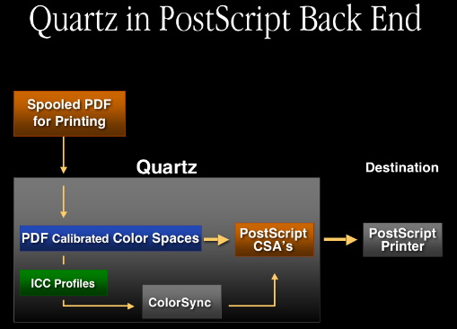

|
OverviewThere are a wide variety of imaging devices in the market today, such as digital cameras, color scanners, color printers, etc., and each device represents colors in very different ways. They each have different color spaces and different gamuts (ranges of colors). This, of course, makes it very difficult for a document acquired on one device to be rendered correctly on another device. The solution to this problem is ColorSync, a complete color management system, designed to provide consistent color across devices. The two key foundations upon which ColorSync is built are International Color Consortium (ICC) profiles and Color Management Modules (CMMs). ICC ProfilesICC profiles use a cross-platform file format defined by the ICC. They are documents containing data that describe how to transform colors from device color space to an intermediate color space. This file format allows for the description of a wide variety of devices. The data format has been designed to be quite flexible, and can be extended by developers via optional tags. Furthermore, the format is an evolving format, with ongoing improvements. CMMIf you think of profiles as the data used for color management, CMMs are the code. CMMs provide the mathematical engine to perform the profile-to-profile transformations. Apple ships a default CMM, the Apple CMM, as part of ColorSync. This is the same default CMM Apple ships on Mac OS 9. However, we've designed the system to be open and expandable, so third parties can developer their own CMMs if they want to provide their own alternate methods for color transformations. Here's a diagram showing how ColorSync fits into the Mac OS X architecture: Figure 1: Mac OS X Architecture & ColorSync. The ColorSync 2.0 and greater APIs are fully supported in Mac OS X. This means it should be very easy for developers to port their applications to Mac OS X. There are also some new APIs in ColorSync in Mac OS X which provide some enhancements you may want to take advantage of. Also, Quartz and the printing model in Mac OS X take full advantage of ColorSync. ColorSync and Quartzin Mac OS X, ColorSync has been assigned a new role encompassing more than just the standard application services. ColorSync is now used to provide color management to other system components. One of these components is Quartz, Apple's new graphics system based on the PDF imaging model. Quartz has created a new paradigm for color management, which offers alternative access to ColorSync functionality. ColorSync And Quartz Color ManagementOur goals here were to integrate graphics and color management services, satisfying some basic requirements. First, Quartz needed the ability to composite different color spaces and opacity. To meet this requirement, ColorSync is used to convert data from many different color spaces into the one space selected by Quartz as a working space for a compositer. A second requirement focused on the needs of the developer, and is based on the fact all applications using Quartz will have to work with color management. This also needed to be a scalable solution, which would serve the needs of a wide range of applications. On the one hand, the involvement of an application in color management can be very minimal, limited to the use of some predefined default settings provided by Quartz. On the other hand, an application can have the same full control over color management as it does when accessing ColorSync directly. Other requirements include color accuracy, performance and compatablilty with PDF. In simple terms, Quartz color management can be described as being built around ColorSync, which is used as an engine to process PDF color data produced by Quartz. Figure 2: Quartz Color Management. PDF Color ModelTo better understand its design, here's some of the basic concepts pertaining to color in PDF and ColorSync: PDF Color DefinitionIn PDF, color is defined by one of the known color spaces - Device, Calibrated or ICC based: Table 1: Color Spaces in PDF.
This list essentially reflects the history of color management. Initially, only device color spaces were supported. Based on our perspective today, the device color spaces merely provided a specification for different process color models. Because the color appearance is device dependent, these spaces are actually the worst choice for faithful color reproduction across different devices. Next, calibrated color was invented, along with the idea of color conversions through device independent color. The advantage of this method is a significant improvement in color matching across different devices. PDF follows by adding calibrated color spaces. Later on, calibrated color evolved into a standard form - the ICC profile. When color management based on ICC profiles gained its popularity and became the de-facto standard among color professionals, PDF added the ICC-based color space, which allows for embedding ICC profiles into PDF documents. PDF Color ConversionPDF color coversion can be described as a function of source color space, destination color space, and rendering intent. Please take note of the rendering intent values: Figure 3: PDF Color Conversion. ColorSync/ICC Color ModelNow let's take a look at how ICC and ColorSync define color and color conversion. ICC color definitionNaturally, color is defined by an ICC profile. As mentioned previously, the ICC profile is the most general form of the color space description. ICC Color ConversionsICC color conversions are very similar to those in PDF. The differences are an option to insert an intermediate profile between the source and destination profiles: Figure 4: ICC Color Conversions. These additional profiles are used for soft-proofing, color device simulation, applying special affects, etc. As we can now see, the rendering intent values in ICC color conversions are the same as those in PDF: Rendering intent = {perceptual, relative colorimetric, saturation, absolute colorimetric} Color Model in QuartzIntegration of PDF and ICC color modelsThe color model in Quartz was created by integrating the ICC and PDF color models. Here're some of the interesting features of this model. All PDF color spaces are expressed in Quartz as ICC profiles. Device color spaces are assigned default profiles as follows:
Calibrated color spaces contain the calibration record, which can be very easily re-packaged as the ICC profile. Finally, ICC-based color spaces provide their own ICC profiles. PDF color space equivalenceAnother simple but very important concept that Quartz inherited from PDF is color space equivalence. An implied rule is that color conversions are necessary only if the source color space is different from the destination. Quartz takes advantage of this simple rule to properly organize the flow of color data through multiple rendering stages: Figure 5: Color space equivalence Color space is one or more ICC profilesAs mentioned previously, all PDF color spaces are expressed in Quartz as an ICC profile in a manner which is seamless and transparent through all applications working in the PDF imaging model. But at the same time, we needed a provision in Quartz to create color transformations for more than two profiles. For that reason, we designed a color space which can consist of one or more ICC profiles. This way we are able to preserve the PDF concept of matching a single source to a single destination, but at the same time we are able to create those complex color transformations which are suitable for advanced color management. And if the need arises for such a color space to be embedded in PDF, the multiple profiles contained in such a color space can be concatenated by ColorSync into a single profile. Color in Quartz Drawing ModelLet's now see how all the things just discussed come together to provide the desired color processing in the Quartz drawing model. From the top-level perspective, there are three main components involved in this model:
In terms of color processing, the application can request Quartz to render data in any of the PDF color spaces. To accomplish that, Quartz will convert all these into ICC profiles. Default profiles are selected by Quartz, but can be overridden by the application. Quartz will do all compositing in the working space, and ColorSync will be invoked to perform color transformations from any of the source color spaces to the working space. Finally, when compositing is completed, the rasterized data will be sent to the desired destination. Naturally, if the color space of the destination doesn't match the working space, and additional conversion must be done. Let's see how convenient Quartz color management can be for some color operations. For example, applying special effects to all data can be very easily achieved simply by adding the abstract profile to the working space. As shown in the following diagram, all conversions to the working space will include the transformation defining the abstract profile: Figure 6: Applying Special Effects with Abstract Profile. Soft proofing is another task that is particularly suited for color management, By adding a printer profile to the working space, all color corrections that define the printer profile are reflected in the working space, and thus will be shown on the primary display. Figure 7: Soft-proofing Printout on Primary Display. The use of multi-profile color spaces is not limited to the Quartz internals. Applications can also use them. Here is an example of an application using a given color space to create a free-transform color space to produce certain color effects. Figure 8: Free-transform color space used to produce color effects. Quartz Printing Front EndTo complete our story about color management in Quartz, let's look at how color is handled in printing from Quartz. So far we've talked about the main flow of color data from the source to the destination. But one more step is also possible here. The contents can be spooled in PDF form for printing, which will be handled by the print center. There is one very important fact about the spooled data. As was pointed out, all color data is tagged in spooled PDF. And profiles are assigned to the data in exactly the same way they are for ColorSync processing: Figure 9: Color data is tagged in spooled PDF. Quartz Raster Printing Back EndColorSync Color MatchingQuartz is also used to rasterize this spooled PDF at the printing back end. From the color management perspective, we have two options here. The first option is to use ColorSync for color matching. In this case, all color data from the spooled PDF is converted to the printer profile (Note: there is no device data in the spooled PDF). Figure 10: Spooled PDF converted to printer profile. Custom Driver Color MatchingAnother option is custom driver color matching.The color data, by design, is going to be handed off in the color space of the default profile provided by the system. As a result, all data which is tagged with the same default profile will remain untouched. And obviously all other color data will be converted by ColorSync to the system profile. Figure 11: Custom driver color matching. Quartz in PostScript Back EndColorSync is also involved in the PostScript back end. From the color management perspective, our goal here is to convert the color spaces contained in the spooled PDF to PostScript color space arrays (CSAs). Quartz has the internal capability to convert PDF calibrated color spaces directly to PostScript CSAs. All ICC profiles will be converted to PostScript CSAs using ColorSync. Figure 12: ICC profiles converted to PostScript CSAs.  Printing Untagged DataHere's some general notes about behaviors you can expect from the printing system when printing untagged data: PDF DisplayUntagged RGB data in PDF will be tagged with the Generic RGB profile, and as a result it will be color-matched to the screen. Printing Front EndWhen passing source data to the print system, the printing front end spools the print job in the PDF format, and as described in the section above Quartz Printing Front End, all color data is tagged in the spooled PDF. Therefore, when passing untagged RGB source data to the print system for printing, ColorSync will tag the data with the Generic RGB profile (just as is done when displaying PDF data). Printing Back EndWhen printing in Mac OS X, ColorSync will match source data to whatever profile the printer driver provides. For this reason, printer drivers should register profiles for their devices using the Device APIs as discussed in this note. Raster PrintingIf a printer driver provides no profile, ColorSync will substitute the Generic RGB profile. PostScript PrintingOriginally untagged RGB data is ultimately converted to a CIEBasedABC color space based on the Generic RGB profile. Drawing to Multiple ScreensAs described in the section ColorSync and Quartz there is a wide variety of ICC-based color spaces provided by Quartz. This section focuses on those which allow you to access the ColorSync Device Integration database. An example are the color spaces which allow for drawing directly to the screen. There's the Display RGB color space, which is essentially a wrapper around the primary display profile. Display Gray, composed of two profiles: a device-link profile converting Gray to RGB, which is then attached to the primary display profile. And for more advanced uses there's the Display with ID space, a wrapper for Display By AVID profiles: Figure 13: Color spaces which allow for drawing directly to the screen. Quartz in Mac OS X v10.3 "Panther" helps solve the problem of drawing to multiple screens. There are three basic choices an application can make, one which can be defined as the "Simple model", another which can be defined as the "Complete model" or lastly an application can use a combination of these two techniques. These can be characterized as follows: Applications' choice Simple model
Complete model
Some combination of the above
Profiles in Mac OS XOn Mac OS 9, profiles are traditionally stored in the Profiles folder within the System folder. An application wanting to gain access to this folder would use the
You could also use the Mac OS /System/Library/ColorSync/Profiles/ This is where ColorSync stores profiles it uses internally for critical operations, should others be mistakenly lost or damaged. This folder is locked and protected, but if you need to get access to this folder to be able to read these profiles you can again use the
ColorSync profiles are primary stored here: /Library/ColorSync/Profiles/ This is where ColorSync stores the majority of its profiles. This is a read/writable folder. If you need to get access to this folder to be able to read these profiles use the
If you are in a network environment, and your network administrator has stored profiles on the network for network devices, these can be stored in: /Network/Library/ColorSync/Profiles/ If you need to get access to this folder to be able to read these profiles use the
Lastly, users can store their own personal profiles in their home directory: ~/Library/ColorSync/Profiles/ If you need to get access to this folder to be able to read these profiles use the
As on Mac OS 9, ColorSync in Mac OS X supports looking in subfolders of all the above directories (one level deep), or aliases to these folders or profiles. In summary, there are a great many locations where profiles can be stored in Mac OS X. If your application would like to present a list of profiles to the user, we suggest you use the One important note with respect to this API - if you have a Mac OS Classic system folder setup in addition to the Mac OS X system folder, ColorSync by default will not search this Mac OS Classic system folder for profiles. However, if your application wishes to access profiles in this location, use the
In summary, an application should install profiles in: /Library/ColorSync/Profiles/ or in a subfolder of it. Users can install personal profiles in: ~/Library/ColorSync/Profiles/ Profile prerequisitesTraditionally, profiles were filtered based on their type and creator on Mac OS 9 (type ' What really distinguishes a ColorSync profile from any old file is if it is a valid ICC profile. ColorSync determines if a file is a valid ICC profile by looking for the signature bytes ' New optional profile tagsOne of the key features of Mac OS X is it is a multilocalized operating system. ColorSync now provides this same functionality for ICC profiles. Currently, the ICC format defines a required tag 'desc' which stores ASCII, UniCode, and ScriptCode versions of the profile description for display purposes. However, this structure allows the profile to be localized for one language only through UniCode or ScriptCode. Profile vendors have to ship many localized versions to different countries. It also creates problems when a document with localized profiles embedded in it is shipped to a system using a different language. ColorSync has defined a new optional tag to remedy this situation: - ' This tag contains a set of multilingual Unicode strings associated with a profile. We also provide a number of new APIs for easy access to this tag: CMError CMCopyProfileLocalizedStringDictionary (CMProfileRef prof, OSType tag, CFDictionaryRef* dict); prof - profile to query tag - tag type of profile to query dict - returns dictionary This API allows you to get a CMError CMSetProfileLocalizedStringDictionary (CMProfileRef prof, OSType tag, CFDictionaryRef dict); prof - profile to modify tag - tag type of profile to modify dict - dictionary to modify However, most applications will simply want to get one specific string out of a profile. For this reason, we provide the
CMError CMCopyProfileLocalizedString (CMProfileRef prof,
OSType tag,
CFStringRef reqLocale,
CFStringRef* locale,
CFStringRef* str);
prof - profile to query tag - tag type of profile to query
locale - returns locale (optional) dict - returns dictionary string (optional) Here's a short example showing how to use this function. We pass in the optional tag '
err = CMCopyProfileLocalizedString (prof, 'dscm', CFSTR("enUS"), nil, &theStr);
ICC4 ProfilesThe ICC has been working on a new format for profiles to provide for more flexibility and power. This new format is the ICC 4.0 profile format specification. Some of the highlights include:
to distinguish from earlier versions
to tell if two profiles are identical , or if a profile has changed over time. You can access this new MD5 checksum directly in the profile header, or alternately there is a new ColorSync API
These new tags really demonstrate the new power and flexibility of the ICC 4 profiles. One important note is some of your existing tags may now contain these new data formats e.g., ' CMMs in Mac OS XAs with profiles, CMMs can also be installed in multiple locations. Typically, applications would install CMMs in: /Library/ColorSync/CMMs Also, users may install personal CMMs (for example, for debugging) in: ~/Library/ColorSync/CMMs If your application would like to present a list of CMMs to the user, use the Building CMMsCMMs in Mac OS X are CMMs in Mac OS X still contain all the familiar entry points that exist for CMMs on Mac OS 9 such as The Apple CMM has undergone a lot of work to make sure it is finely tuned and integrated fully with Quartz to handle all the various profile types and image color spaces correctly. If you are writing your own CMM, make sure and test it thoroughly, and under a wide variety of cases to ensure it works in this environment. ColorSync Preferences and Supporting APIsUnder Classic Mac OS, applications performing color management generally do not have knowledge of the various devices on the system. Because of this, applications would find it necessary to present some kind of interface to obtain device color information from the user. Similarly, applications performing color management on data with no associated profile would need to understand what type of device the data originated from. Again, this would require the application present some kind of interface to allow the user to select a default profile for a color space or document. Over time, users were becoming confused by the great myriad of different interfaces being presented by applications performing color management. ColorSync in Mac OS X is now aware of system devices, and the ColorSync user interface has been redesigned to take advantage of this information. Profiles for Standard Color SpacesDocuments can of course contain many different types of data. With this menu users can specify profiles for documents for different color spaces. Of course if the document does have a profile, this will take precedence, but often times documents don't have profiles associated with them. Users can retrieve this preference via the
enum {
cmXYZData = 'XYZ ',
cmLabData = 'Lab ',
cmRGBData = 'RGB ',
cmSRGBData = 'sRGB',
...
};
CMGetDefaultProfileBySpace ( OSType space, CMProfileRef* prof );
space - the color space prof - returns the default profile for the specified color space Here's sample code demonstrating how an application might benefit from these APIs. The sample accepts an image reference as an input and attempts to obtain information or data from this reference. The first thing an application should do when managing color for a document is to determine whether or not any embedded profile exists for the document. Most of the modern image formats have containers for profiles, so there are known ways to get profiles for documents in these formats. However, if there is no profile associated with the document, we can conveniently use the Next, we obtain a destination profile for the document. We can use the One important note regarding this example is the code shown here is appropriate for a Mac OS Classic or Carbon application running on Mac OS 9. In Mac OS X, much of the destination color management is done for you, so you don't need this matching if your application uses Quartz. However, you need to at least be aware of where the data is coming from, and if no profile is associated with it you can tag it using the ColorSync APIs. ColorSync Prefs Code Sample
CMError myMatchImage (myImageRef image)
{
CMProfileRef source, dest;
CMWorldRef cw;
CMBitMap bm;
source = myGetEmbeddedProfile (image);
if (source == nil)
{
space = myGetColorImageSpace (image);
err = CMGetDefaultProfileBySpace (space, &source);
}
err = CMGetDefaultProfileByUse (cmDisplayUse, &dest);
err = NCWNewColorWorld (&cw, source, dest);
bm = myGetImageBitMap (image);
err = CWMatchBitMap (cw, &bm, ..., ..., ...);
...
ColorSync Preferences TidbitsAs with ColorSync 3.0 on Mac OS 9, ColorSync applications in Mac OS X can also launch the ColorSync control panel to solicit color choices, including default profiles for devices and documents, as well as the preferred CMM. Users can also switch between named collections of color settings called workflows. To launch the ColorSync control panel from your application, simply call the following function: pascal CMError CMLaunchControlPanel (UInt32 flags); flags - You must pass a value of 0 for this parameter. Future versions of ColorSync may define constants for the flags parameter to specify how the ColorSync control panel is launched. function result - A result code of type CMError. When your application calls the ColorSync Preferences SummarySince all data is color managed by Quartz in Mac OS X, your application can participate simply by making sure your source and destination data is associated with a profile. Most applications can use the ColorSync Preferences APIs for color management, to get user's preferences. And these profile accessor APIs are extensible, a bridge to future device and color-space support. Lastly, the ColorSync Preferences APIs offer great flexibility in that applications can manage color from both document-centric and device-centric perspectives. ColorSync Device SupportMac OS X contains new device managers for input, display, and printing. This provides an opportunity for developers to integrate with ColorSync and provide both awareness of devices and access to their profiles. This new device support has been implemented with the following services:
Device and Profile Registration: ColorSync relies on the Device Managers to detect the presence of devices and to discover or build device profiles. The following are new ColorSync APIs which you can use to capture device and profile information: CMRegisterColorDevice CMError CMRegisterColorDevice( CMDeviceClass deviceClass, CMDeviceID deviceID, CFDictionaryRef deviceName, const CMDeviceScope * deviceScope); Parameters deviceClass The class of the device (e.g., 'scnr', 'cmra', 'prtr', 'mntr') deviceID Unique identifier per class (Class + ID uniquely id's device) deviceName Name of the device. deviceScope Structure defining the user and host scope this device pertains to. For a device to be recognized by ColorSync (and possibly other parts of MacOSX) it needs to register itself via this API. If the device has ColorSync profiles associated with it, it should identify those via the CMUnregisterColorDevice CMError CMUnregisterColorDevice ( CMDeviceClass deviceClass, CMDeviceID deviceID ); Parameters deviceClass The class of the device (e.g., 'scnr', 'cmra', 'prtr', 'mntr') deviceID Unique identifier per class (Class + ID uniquely id's device) When a device is no longer to be used on a system (as opposed to being offline), it should be unregistered. If a device is temporarily shut down or disconnected, it need not be un-registered unless the device driver: a) "knows" that it will not be used (being de-installed) b) cannot access the device profiles without the device. If either of these are true, the device should be un-registered. CMSetFactoryDeviceProfiles CMError CMSetFactoryDeviceProfiles ( CMDeviceClass deviceClass, CMDeviceID deviceID, CMDeviceProfileID defaultID, const CMDeviceProfileArray* deviceProfiles ); Parameters deviceClass The class of the device (e.g., 'scnr', 'cmra', 'prtr', 'mntr') deviceID Unique identifier per class (Class + ID uniquely id's device) defaultID The id of the default profile for this device. deviceProfiles Ptr to caller's storage containing the profile array. This API establishes the profiles used by a given device. It should be called after device registration to notify ColorSync of the device's profiles. Note that a distinction is made in the API between the "factory" device profiles and the current device profiles, since the latter may contain modifications to the factory set. Default Devices and Default Profiles: These new APIs for profiles and standard devices provide access to defaults, not just any device profile. When profiles are registered for a device, one is identified as the default for that device. However, over time, the user may change their settings. When a user changes settings, the default device or default profile may change, and ColorSync is made aware of such changes by the Device Managers. The Device Managers keep track of which device is default. Here are some new APIs to manage default devices and profiles: CMSetDefaultDevice CMError CMSetDefaultDevice ( CMDeviceClass deviceClass, CMDeviceID deviceID ); Parameters deviceClass The class of the device (e.g., 'scnr', 'cmra', 'prtr', 'mntr') deviceID Unique identifier per class (Class + ID uniquely id's device) For each class of device, a device management layer may establish which of the registered devices is the default. This helps keep color management choices to a minimum and allows for some "automatic" features to be enabled, e.g., "Default printer" as an output profile selection. If no such device (as specified by deviceClass and deviceID) has been registered, an error is returned. CMSetDeviceDefaultProfileID CMError CMSetDeviceDefaultProfileID ( CMDeviceClass deviceClass, CMDeviceID deviceID, CMDeviceProfileID defaultID ); The default profile ID for a given device is an important piece of information because of the Parameters deviceClass The class of the device (e.g., 'scnr', 'cmra', 'prtr', 'mntr') deviceID Unique identifier per class (Class + ID uniquely id's device) defaultID The id of the default profile for this device. Calibration Support: These new Device Managers in Mac OS X now make if possible for ColorSync to provide support for calibration. This is made possible by the data ColorSync is given for a profile by the Device Managers. Profiles are registered with an ID and a "mode" name (e.g., "plain paper"). Profiles are referenced during processing by ID. Such profiles can be customized by an application. For example a calibration application can get the factory profile for a given calibration mode, and then set a new profile (by ID) to be used for that mode. Here are some new APIs supporting profile customization: CMGetDeviceFactoryProfiles CMError CMGetDeviceFactoryProfiles ( CMDeviceClass deviceClass, CMDeviceID deviceID, CMDeviceProfileID* defaultID, UInt32* arraySize, CMDeviceProfileArray* deviceProfiles ); This API allows the caller to retrieve the original profiles for a given device. These may differ from the actual profiles in use for that device, in the case where any factory profiles have been replaced (updated). To get the actual profiles in use, call Parameters deviceClass The class of the device (e.g., 'scnr', 'cmra', 'prtr', 'mntr') deviceID Unique identifier per class (Class + ID uniquely id's device) defaultID Ptr to storage for the id of the default profile for this device. arraySize Ptr to storage for the size of the array to be returned. The caller may first call this routine to get the size returned, then call it again with the size of the buffer to receive the array. deviceProfiles Ptr to callers storage to receive the profile array. The caller may first pass NIL in this parameter to receive the size of the array in the arraySize parameter. Then, once the appropriate amount of storage has been allocated, a pointer to it can be passed in this parameter to have the array copied to that storage. CMSetDeviceProfiles CMError CMSetDeviceProfiles( CMDeviceClass deviceClass, CMDeviceID deviceID, const CMDeviceProfileScope * profileScope, const CMDeviceProfileArray * deviceProfiles); This API provides a way to change the profile(s) used by a given device. It can be called after device registration by calibration applications to reset a device's profile(s) from factory defaults to calibrated profiles. In order for this call to be made successfully, the caller must pass the Parameters deviceClass The class of the device (e.g., 'scnr', 'cmra', 'prtr', 'mntr') deviceID Unique identifier per class (Class + ID uniquely id's device) profileScope Structure defining the scope these profiles pertain to. deviceProfiles Ptr to caller's storage containing the profile array which contains replacements for the factory profiles. Not all the original profiles must be replaced with this call. Therefore the array can contain as few as 1 profile and as many as there were in the factory array if they are all to be replaced. Profiles are repaced by ID. CMSetDeviceProfile CMError CMSetDeviceProfile( CMDeviceClass deviceClass, CMDeviceID deviceID, const CMDeviceProfileScope * profileScope, CMDeviceProfileID profileID, const CMProfileLocation * deviceProfLoc); This API provides a way to change a profile used by a given device by ID. It can be called after device registration by calibration applications to reset a device's profile from factory defaults to calibrated profiles. In order for this call to be made successfully, the caller must pass the Parameters deviceClass The class of the device (e.g., 'scnr', 'cmra', 'prtr', 'mntr') deviceID Unique identifier per class (Class + ID uniquely id's device) profileScope Structure defining the scope these profiles pertain to. profileID The id of the default profile for this device. deviceProfLoc Ptr to storage for the CMProfileLocation of the profile. Since this structure is a fixed length structure, the caller can simply pass a ptr to a stack-based structure or memory allocated for it. NotificationsApplications now can be made aware of changes to devices on their system. ColorSync will post notifications to a distributed notification center (check the Cocoa and Core Foundation documentation for additional details on distributed notification centers). Any process on the system which registers with a distributed center will receive these notifications. Here's some of the available notifications:
There are no ColorSync APIs to register to receive the above notifications - ColorSync only posts these notifications to the distributed center. Instead, use the following Cocoa and Core Foundation APIs to receive the above notifications: CFNotificationCenterAddObserver NSDistributedNotificationCenter Here's the specific notification strings (from the ColorSync interface file CMDeviceIntegration.h) which you can use with the above functions:
#define kCMDeviceRegisteredNotification CFSTR("CMDeviceRegisteredNotification")
#define kCMDeviceUnregisteredNotification CFSTR("CMDeviceUnregisteredNotification")
#define kCMDeviceOnlineNotification CFSTR("CMDeviceOnlineNotification")
#define kCMDeviceOfflineNotification CFSTR("CMDeviceOfflineNotification")
#define kCMDeviceStateNotification CFSTR("CMDeviceStateNotification")
#define kCMDefaultDeviceNotification CFSTR("CMDefaultDeviceNotification")
#define kCMDeviceProfilesNotification CFSTR("CMDeviceProfilesNotification")
#define kCMDefaultDeviceProfileNotification
CFSTR("CMDefaultDeviceProfileNotification")
#define kCMPrefsChangeDeviceNotification
CFSTR("AppleColorSyncPreferencesChangedNotification")
To demonstrate how the general notification mechanism works, here's a code snippet written in Cocoa showing how you can get notified when the display profile changes. First, register with the default distributed notification center to receive the necessary ColorSync device notifications. Then, when the notification is received, simply call
-(void)registerNotifications
{
NSDistributedNotificationCenter *center;
center = [NSDistributedNotificationCenter defaultCenter];
[center addObserver:self
selector:@selector(notification:)
name:kCMDeviceUnregisteredNotification
object:nil];
[center addObserver:self
selector:@selector(notification:)
name:kCMDefaultDeviceNotification
object:nil];
[center addObserver:self
selector:@selector(notification:)
name:kCMDeviceProfilesNotification
object:nil];
[center addObserver:self
selector:@selector(notification:)
name:kCMDefaultDeviceProfileNotification
object:nil];
}
-(void)notification:(NSNotification *)note
{
CMError err = CMGetDefaultProfileByUse(cmDisplayUse, &gProfRef);
}
Similar code to check for profile changes could be written using the Mac OS X Core Foundation distributed notifications (using NSDistributedNotificationCenter, etc.). Check the Mac OS X Core Foundation documentation for additional information. ColorSync Device Support SummaryColorSync is now integrated with Device Managers. Applications have access to the default profiles for standard devices (input, display, output) via the new ColorSync preferences APIs. Applications can get more specific profile information for registered devices from these APIs. Calibration is now supported in ColorSync plus new notification services are now provided. Color Management in PrintingA very important aspect of color management in Mac OS X is color management in the printing system. Printing in Mac OS X consists of two main components: the front end and the back end. The main role of the front end is to choose the printer, get the necessary print options and spool the print job into PDF. The main role of the back end is to convert the spooled PDF into an appropriate format for the printer. If we take a closer look at the printing front end we notice all color data in the spooled PDF is tagged with profiles. By definition, no printer specific color conversions are done at the front end, but it's important to note the printing system will consult the ColorSync Device Integration database and extract the profile matching the current printing conditions. What happens at the back end depends on the type of printer in use. For raster printers, the spooled PDF is rasterized and the color data is converted into the printer profile. This is accomplished by extracting the printer profile from the print job. If none exist, the printing system will provide a default profile so matching can occur. For PostScript printers, there are two options: the first is traditional color matching in the printer. For this option, all the profiles from the spooled PDF are converted into PostScript CSAs. Color Matching On The Host by ColorSyncThere's an option for doing color matching on the computer using ColorSync. In this case, as with raster printing, profiles are retrieved from the print job. If none exist, the printing system will provide a default profile so color matching can occur. cupsICCProfile PPD Declaration EntryCUPS PostScript and raster drivers may use the Listing 1: New PPD declaration entry.
*cupsICCProfile {mode specifier} {profile specifier}
where the mode specifier is the concatenation of three fields: color model, media type and resolution. Any of these fields can be omitted to signify any model/media/resolution. The profile specifier is the profile standard file path relative to /usr/share/cups/profiles/. Here's an example showing a PostScript printer PPD file that is registering two modes: one for 600 X 600 dpi and one for 1200 X 1200 dpi, followed by the profile specifier: Listing 2: Example PostScript PPD file registering two modes. *%======================== *% Device capabilities *%======================== *ColorDevice: True *DefaultColorSpace: CMYK *cupsICCProfile ..600x600dpi "cmykProfile600dpi.icc" *cupsICCProfile ..1200x1200dpi "cmykProfile1200dpi.icc" Technical Q&A QA1352, 'New PPD keywords available in Mac OS X version 10.3' describes this new PPD keyword in detail as well. Quartz FiltersQuartz filters are an optional component in the Quartz imaging and color-matching pipeline which allow you to associate a sequence of imaging or color correction operations with a single drawing. Filters may act on all drawing operations or only on a specified set. They can be configured to perform specialized imaging or color operations. They may be defined and saved in XML. Here's a diagram showing how the Quartz filter component fits into the overall Quartz architecture: Figure 14: Quartz Filter Component in the Quartz Architecture. Quartz filters are currently available only through the various Mac OS X system-built utilities and applications. However, a new set of API's will be forthcoming. Demos of Quartz filtersSoft-ProofingSoft-proofing via Quartz filters is possible from the print dialog. Simply click the "Preview" button in the print dialog and in the Preview window you'll now see a check box titled "Soft Proof" in the lower-left corner of the window. Here's how it looks: Figure 15: Soft-proofing feature. Print dialogNotice the above image is very dark. This can be corrected using the ColorSync printer dialog extension (PDE). To access the ColorSync PDE, open the print dialog, click the "Advanced" button, then in the resulting dialog look for the item "ColorSync" in the popup menu list: Figure 16: ColorSync PDE. The ColorSync PDE allows PostScript printers to choose which color-matching option to use via the "Color Conversion" popup menu. Select either"Standard" or "In Printer": Figure 17: Color conversion selection. Using the Color Conversion options it's possible to perform color-matching on the computer using the printer profile ("Standard"), or fall-back to traditional color matching in the printing path ("In Printer"). Finally, at the bottom of the "Quartz Filter" menu in the ColorSync PDE there is an option to add Quartz filters when printing,: Figure 18: Quartz filters menu option. Select this option and the document is spooled to PDF and sent along with the "open" (' Figure 19: Filter inspector window. If you click any of the filters in the list and also click the "Preview" check box you can see the results of applying the selected filter. You can add and remove filters by clicking the "New" and "Delete" buttons. For each filter there are a number of different options which you can manage. These are:
ColorSync UtilityColorSync PreferencesThe ColorSync Preferences are part of ColorSync Utility (previously they were in the System Preferences). This makes ColorSync Utility the "one-stop shopping" center for all the ColorSync related settings. It's well known many applications may provide a button in their program's user interface to send users to the ColorSync preferences. This is usually accomplished by calling the Quartz Filter SupportUsers can access Quartz filters from the ColorSync Utility. For more information on Quartz filters, see Quartz Filters. Administration FeaturesColorSync Utility contains administration features which allow the system administrator user to specify the default profiles for other users on the same machine. 3D View Options for Profile ViewerThe 3D profile viewer in ColorSync Utility has a contextual menu to allow you to view the profile in a number of different color spaces such as Lab, Luv, Yxy and others. Here's how it looks: Figure 20: 3D viewer contextual menu. You can also use the profile viewer to compare the gamut of two profiles. A contextual menu item "Hold for comparison" allows you to specify the first of a pair of profiles to use for comparison. Simply control-click on a profile in the viewer pane to bring up the contextual menu, then select "Hold for comparison". The profile will lighten in color to indicated it has been selected as shown here: Figure 21: Hold for comparison menu item. Now select another profile from the list and the viewer pane will show both profiles together along with any overlap. Figure 22: Comparing the gamut of two profiles. ColorSync and OpenGLColorSync and OpenGL can be used to perform real-time color correction and enhancement of video. In the past, this was only possible on very high-end hardware, but now it can be done on desktop machines due to the availability of high performance video cards. Many modern video cards have support for per-pixel 3d texture lookup. This is currently available on the following video cards:
By loading color correction transformations into these tables, you can accomplish real-time color correction. This is quite powerful, and it demonstrates the integration of all the graphics technologies available in Mac OS X. It combines the advantages and powers of ColorSync, OpenGL, QuickTime and Quartz. The way this works is QuickTime content is played on a Quartz OpenGL surface, and attached to that surface is a 3D texture built from a ColorSync color world reference. In order to make it easier for applications to do this, some APIs were added to ColorSync. The first is Here's the definition for the
CMMakeProfile
CMError CMMakeProfile(CMProfileRef prof,
CFDictionaryRef spec)
Description Adds appropriate tags to a profile to make display or abstract profile based on an specification dictionary. Parameters prof(in/out) the profile to modify spec(in) specification dictionary One key in the specification dictionary must be " " " For " " (coerced from a " (coerced from a void) For " " " " " " " " " either " " " " " " or " " " either " " or " For " " " Optionally, the keys/values for " Here's a short code snippet showing how to use
void myLabToLabProc(float* L, float* a, float* b, void* refcon)
{
float angle = *(float*)refcon;
float aa = (*a), bb = (*b);
*a = aa*cos(angle) - bb*sin(angle);
*b = aa*sin(angle) + bb*cos(angle);
}
void makeAbstractWithAngle (CMProfileRef prof, float angle)
{
CFDictionaryRef dict;
SInt64 cb64, rc64;
SInt32 gridPoints;
CFStringRef keys[4];
CFTypeRef vals[4];
CMError cmErr;
keys[0] = CFSTR("profileType");
vals[0]= CFSTR("abstractLab");
gridPoints = 33;
keys[1] = CFSTR("gridPoints");
vals[1]= CFNumberCreate(0, kCFNumberSInt32Type, &gridPoints);
cb64 = (SInt64) myLabToLabProc;
keys[2] = CFSTR("proc");
vals[2]= CFNumberCreate(0, kCFNumberSInt64Type, &cb64);
rc64 = (SInt64) ∠
keys[3] = CFSTR("refcon");
vals[3]= CFNumberCreate(0, kCFNumberSInt64Type, &rc64);
dict = CFDictionaryCreate(nil, keys, vals, 4,
&kCFTypeDictionaryKeyCallBacks,
&kCFTypeDictionaryValueCallBacks);
cmErr = CMMakeProfile(prof, dict);
CFRelease(vals[1]); CFRelease(vals[2]); CFRelease(vals[3]);
CFRelease(dict);
}
The second API added to support the real-time color correction of video is Here's the formal definition for
CWFillLookupTexture
CMError CWFillLookupTexture( CMWorldRef cw,
UInt32 gridPoints,
UInt32 format,
UInt32 dataSize,
void * data)
Description This API fills a 3D lookup texture from a colorworld. The resulting table is suitable for use in OpenGL to accelerate color management in hardware. Parameters cw (in) the colorworld to use
number of grid points per channel in the texture format (in) format of pixels in texture (e.g. dataSize (in) size in bytes of texture data to fill data (in/out) pointer to texture data to fill Here's a short code snippet showing how to use
void* make_3d_texture(CMProfileRef src, CMProfileRef abs, CMProfileRef dst)
{
UInt32 size, grid = 9, fmt = cmTextureRGBtoRGBX8;
CMWorldRef cw;
void* data;
CMError err;
cw = make_colorworld(src, abs, dst);
err = CWFillLookupTexture(cw, grid, fmt, &size, nil);
data = malloc(size);
err = CWFillLookupTexture(cw, grid, fmt, &size, &data);
return data;
}
Also, sample code is available in the Mac OS X Developer Tools which demonstrates the use of the above-mentioned APIs to perform real-time color correction. Download and install the Mac OS X Developer Tools and look for the "ColorWhirled" sample here : /Developer/Examples/ColorSync/ColorWhirled ColorSync And QuickTimeQuickTime 6.4 introduces new graphics importer functions such as An opt-out flag is provided for applications that call ColorSync directly. For a complete list of these new functions, see the What's New in QuickTime 6.4 document. ColorSync And Image CaptureBy default, Image Capture will register a Generic camera profile for all devices, so all downloaded images will be assigned a profile. Optionally, you may specify a profile to be embedded in images you download or scan. Use the See the Image Capture SDK for more details. Display CalibrationDisplay calibration gives the user the ability to automatically generate profiles for the display, and to calibrate the display in an easy to use fashion. Display calibration is performed by clicking the "Calibrate" button in the Display preferences (found in the System Preferences). Normally, this button will simply launch the Apple calibrator. However, this architecture supports third-party calibrators as well. There's a few simple modifications you'll need to make to your calibrator for it to be recognized by ColorSync. Here's a quick summary: Support for your calibrator
To get you started, there's an example calibrator that's installed with the Developer Tools in: /Developer/Examples/ColorSync/ Look for the project "DemoCalibrator". This sample code demonstrates how to make the above modifications to a calibrator. Use this sample as a starting point for your calibrator. To see how this works, build the demo calibrator and install the built executable into /Library/ColorSync/Calibrators/. Now go to the Display Preferences (in the System Preferences), click the "Color" tab and click the "Calibrate" button. This will bring up a new dialog that allows the user to choose which of the installed calibrators to use. Here's how the dialog looks: Figure 23: Dialog for choosing a Calibrator. Apple Calibrator Expert ModeAn expert mode is available for the Apple calibrator. To see this in action, go to the Display Preferences, click the "Color" tab, then click the "Calibrate" button and finally select the "Display Calibrator" (the Apple calibrator) in the list. Now click the "Calibrate" button and in the resulting window click the expert mode check box to turn on expert mode. The Apple calibrator has the ability to show single-patch, and the ability to adjust the tint/brightness control, which allows for much finer control. This was necessary because it's very hard for users to adjust blue gamma as it is less visible to the human eye. The Apple calibrator also allows for multiple steps. This means in addition to adjusting mid-tones, you can adjust highlights, shadows and dark shadows. This will result in good calibration on LCD displays, which have complex gamma curves. The Apple calibrator also allows the calibration profile to be used by other users on the same machine. SIPSSIPS stands for: Scriptable Image Processing System. SIPS was created because it was determined there was a need for a tool which would perform many common operations on image files in a scriptable manner. As it stands, there are a number of existing technologies which provide for manipulations of images. For example, ColorSync Scripting can perform many ColorSync operations such as color-matching of images, but it can't rotate, scale or convert formats. Image Capture Scripting can rotate and scale images, but it can't color match or convert formats. Finally, the Preview application can rotate, scale and covert formats, but it is not Apple-scriptable. SIPS brings all these different technologies together to provide a single tool with which to perform common operations on images. The current feature set for SIPS includes:
Possible features for future releases of SIPS include:
SIPS is currently implemented as a simple compiled tool, which is installed in /usr/bin/sips. It links against CoreGraphics, QuickTime and ColorSync. It can operate on one or more file at a time. It can query or modify images or profiles. SIPS queries can return properties in simple text form or in XML form. Actions can modify files in-place or to an output directory. Because SIPS is a simple command line tool there's lots of ways to use it. It can be invoked from the terminal shell, from AppleScript, from other scripting languages or from an application using C code (AppKit or Posix calls). For example, open the Terminal and type $ sips --help sips 1.0 - scriptable image processing system. This tool is used to query or modify raster image files and ColorSync ICC profiles. Its functionality can also be used through the "Image Events" AppleScript suite. Usages: sips [-h, --help] sips [-H, --helpProperties] sips [image query functions] imagefile(s) sips [profile query functions] profile(s) sips [image modification functions] imagefile(s) [--out outimage | --out outdir] sips [profile modification functions] profile(s) [--out outprofile | --out outdir] Profile query functions: -g, --getProperty key -X, --extractTag tag tagFile -v, --verify Image query functions: -g, --getProperty key -x, --extractProfile profile Profile modification functions: -s, --setProperty key value -d, --deleteProperty key --deleteTag tag --copyTag srcTag dstTag --loadTag tag tagFile --repair Image modification functions: -s, --setProperty key value -d, --deleteProperty key -e, --embedProfile profile -E, --embedProfileIfNone profile -m, --matchTo profile -M, --matchToWithIntent profile intent -r, --rotate degreesCW -f, --flip horizontal|vertical -c, --cropToHeightWidth pixelsH pixelsW -p, --padToHeightWidth pixelsH pixelsW -z, --resampleHeightWidth pixelsH pixelsW --resampleWidth pixelsW --resampleHeight pixelsH -Z, --resampleHeightWidthMax pixelsWH -i, --addIcon Here's an example of a simple SIPS command to rotate an image 30 degrees: $sips -r 30 /Users/steve/image.JPG Here's an example of a simple SIPS command to get an image property (the image height). First, get a list of the available image properties with the
$sips --helpProperties
Special properties:
all binary data
allxml binary data
Image properties:
dpiHeight float
dpiWidth float
pixelHeight integer (read-only)
pixelWidth integer (read-only)
format string jpeg | tiff | png | gif | jp2 | pict | bmp | qtif | psd
formatOptions string default | [low|normal|high] | packbits
space string (read-only)
samplesPerPixel integer (read-only)
bitsPerSample integer (read-only)
creation string (read-only)
make string
model string
software string (read-only)
description string
copyright string
artist string
profile binary data
Profile properties:
description utf8 string
size integer (read-only)
cmm string
version string
class string (read-only)
space string (read-only)
pcs string (read-only)
creation string
platform string
quality string normal | draft | best
deviceManufacturer string
deviceModel integer
deviceAttributes0 integer
deviceAttributes1 integer
renderingIntent string perceptual | relative | satuation | absolute
creator string
copyright string
md5 string (read-only)
Then, issue the command using the image property qualifier: $ sips -g dpiHeight image.JPG image.JPG dpiHeight: 216.000 ColorSync changes for Mac OS X 10.4 TigerFloating Point SupportOne of the goals of Tiger was to provide a new high fidelity, cinematic graphical environment. In order to achieve this, full floating point support was needed throughout the entire operating system, with ColorSync as one of the key components. New structure: CMFloatBitmapTo provide for this new graphical environment, ColorSync has introduced a new bitmap structure Listing 3: CMFloatBitmap structure.
/*
* CMFloatBitmap
*
* Summary:
* A new structure that defines and arbitrary map of float color
* values.
*
* Discussion:
* The structure defines a pixel array of dimensions
* [height][width][chans] where 'chans' is the number of channels in
* the colorspace plus an optional one for alpha. The actual memory
* pointed to by the structure can contain a variety of possible
* arrangements. The actual data values can be chunky or planar.
* The channels can by in any order.
*
* Examples:
* a) float* p contains a 640w by 480h bitmap of chunky RGB data
* CMFloatBitmap map = { 0, // version
* {p, p+1, p+2}, // base addrs of R,G,B
* 480, 640, // height, width
* 640*3, // rowStride
* 3, // colStride
* cmRGBData,
* kCMFloatBitmapFlagsNone};
* b) float* p contains a 640w by 480h bitmap of chunky BGRA data
* CMFloatBitmap map = { 0, // version
* {p+2, p+1, p, p+3}, // base addrs of R,G,B,A
* 480, 640, // height, width
* 640*4, // rowStride
* 3, // colStride
* cmRGBData,
* kCMFloatBitmapFlagsAlpha};
* c) float* p contains a 640w by 480h bitmap of planar CMYK data
* CMFloatBitmap map = { 0, // version
* {p, p+640*480 , p+2*640*480 , p+3*640*480},
* 480, 640, // height, width
* 640, // rowStride
* 1, // colStride
* cmCMYKData,
* kCMFloatBitmapFlagsNone};
*/
struct CMFloatBitmap {
/*
* The version number of this structure to allow for future
* expansion. Should contain 0 for now.
*/
unsigned long version;
/*
* The base address for each channel in canonical order. The
* canonical order for RGB is R,G,B. CMYK is C,M,Y,K etc. A maximum
* of sixteen channels is supported. Another way to think of this is
* buffers[c] = &(pixelArray[0][0][c])
*/
float * buffers[16];
/*
* The height (in pixels) of the bitmap.
*/
size_t height;
/*
* The width (in pixels) of the bitmap.
*/
size_t width;
/*
* The number of floats to skip to move from one row to the next.
* This is typically (width*chans) for chunky pixel buffers or
* (width) for planar. Can be negative if the image is vertically
* flipped.
*/
ptrdiff_t rowStride;
/*
* The number of floats to skip to move from one column to the next.
* This is typically (chans) for chunky pixel buffers or (1) for
* planar. Can be negative if the image is horizontally flipped.
*/
ptrdiff_t colStride;
/*
* The colorspace of the data (e.g cmRGBdata cmCMYKData)
*/
OSType space;
/*
* Holds bits to specify the alpha type of the data. The remaining
* bits are reserved for future use.
*/
CMFloatBitmapFlags flags;
};
typedef struct CMFloatBitmap CMFloatBitmap;
This new New APIsA number of new APIs have been introduced for working with the CMFloatBitmapMakeChunkyMost developers will specify a buffer of chunky or interleaved data with the Listing 4: CMFloatBitmapMakeChunky function. /* * CMFloatBitmapMakeChunky() * * Summary: * A handy funtion to fill in a CMFloatBitmap. * * Discussion: * Returns a filled in CMFloatBitmap structure given a single buffer * of chunky data with no alpha. * * Parameters: * * buffer: * (in) address of interleaved data * * height: * (in) height of bitmap in pixels * * width: * (in) width of bitmap in pixels * * space: * (in) colorsapce of the data * * Result: * a filled in CMFloatBitmap * * Availability: * Mac OS X: in version 10.4 and later in ApplicationServices.framework * CarbonLib: not available * Non-Carbon CFM: not available */ extern CMFloatBitmap CMFloatBitmapMakeChunky( float * buffer, size_t height, size_t width, OSType space) AVAILABLE_MAC_OS_X_VERSION_10_4_AND_LATER; Regardless of whether you fill the structure by hand or call the helper API, you can then use ColorSync to match the data defined by any floating point bitmap. There are three new functions to do this: CMConvertXYZFloatBitmap
Listing 5: CMConvertXYZFloatBitmap function. /* * CMConvertXYZFloatBitmap() * * Summary: * Used to convert CMFloatBitmaps between the related colorspaces * XYZ, Yxy, Lab, and Luv. * * Discussion: * The buffer data from the source CMFloatBitmap is converted into * the buffer data specified the destination CMFloatBitmap. * Converion "in-place" is allowed. * * Parameters: * * src: * (in) description of source data buffer to convert from * * srcIlluminantXYZ: * (in) required if src->space is XYZ or Yxy * * dst: * (in,out) description of destination data buffer to convert to * * dstIlluminantXYZ: * (in) required if dst->space is XYZ or Yxy * * method: * (in) the chromatic adaptation method to use * * Availability: * Mac OS X: in version 10.4 and later in ApplicationServices.framework * CarbonLib: not available * Non-Carbon CFM: not available */ extern CMError CMConvertXYZFloatBitmap( const CMFloatBitmap * src, const float srcIlluminantXYZ[3], CMFloatBitmap * dst, const float dstIlluminantXYZ[3], CMChromaticAdaptation method) AVAILABLE_MAC_OS_X_VERSION_10_4_AND_LATER; CMConvertRGBFloatBitmap
Listing 6: CMConvertRGBFloatBitmap function. /* * CMConvertRGBFloatBitmap() * * Summary: * Used to convert CMFloatBitmaps between the related colorspaces * RGB, HSV, and HLS. * * Discussion: * The buffer data from the source CMFloatBitmap is converted into * the buffer data specified the destination CMFloatBitmap. * Converion "in-place" is allowed. * * Parameters: * * src: * (in) description of source data buffer to convert from * * dst: * (in,out) description of destination data buffer to convert to * * Availability: * Mac OS X: in version 10.4 and later in ApplicationServices.framework * CarbonLib: not available * Non-Carbon CFM: not available */ extern CMError CMConvertRGBFloatBitmap( const CMFloatBitmap * src, CMFloatBitmap * dst) AVAILABLE_MAC_OS_X_VERSION_10_4_AND_LATER; Both of these functions are based on well known textbook formulas, so there's no need to pass in a profile or colorworld to handle the transform. Instead, these functions will perform the mathematical calculations for you with floating point precision. CMMatchFloatBitmap
Listing 7: CMMatchFloatBitmap function. /* * CMMatchFloatBitmap() * * Summary: * Used to convert CMFloatBitmaps using a CMWorldRef. * * Discussion: * The buffer data from the source CMFloatBitmap is converted into * the buffer data specified the destination CMFloatBitmap. * Converion "in-place" is allowed. * * Parameters: * * cw: * (in) the CMWorldRef to convert with * * src: * (in) description of source data buffer to convert from * * dst: * (in,out) description of destination data buffer to convert to * * Availability: * Mac OS X: in version 10.4 and later in ApplicationServices.framework * CarbonLib: not available * Non-Carbon CFM: not available */ extern CMError CMMatchFloatBitmap( CMWorldRef cw, const CMFloatBitmap * src, CMFloatBitmap * dst) AVAILABLE_MAC_OS_X_VERSION_10_4_AND_LATER; Use of CFTypesCMProfileRef and CMWorldRef are now a CFTypeColorSync is now more closely integrated with the Core Foundation types ( CMProfileCopyICCDataThe Listing 8: CMProfileCopyICCData function. /* * CMProfileCopyICCData() * * Summary: * Return a copy of the icc data specified by `prof'. * * Parameters: * * allocator: * (in) The object to be used to allocate memory for the data * * prof: * (in) The profile to query * * Availability: * Mac OS X: in version 10.4 and later in ApplicationServices.framework * CarbonLib: not available * Non-Carbon CFM: not available */ extern CFDataRef CMProfileCopyICCData( CFAllocatorRef allocator, CMProfileRef prof) AVAILABLE_MAC_OS_X_VERSION_10_4_AND_LATER; API ChangesBelow is a discussion of APIs changes for ColorSync in Mac OS X 10.4 Tiger. Some of the ColorSync defaults/preferences APIs are to be deprecatedSeveral years ago, one feature added to ColorSync at both the API and user-interface level was a set of ColorSync Preferences and Supporting APIs to enable applications to specify default profiles based on usage and color space. The goal of these APIs was to simplify the user interface across a wide variety of applications. In practice, very few applications have used these APIs. In addition, developers have indicated they are confused with the user interface in Colorsync Utility, because any changes made in the settings don't seem to have any kind of noticable effect. As a result, these APIs are being deprecated along with the user interface. However, existing applications that are using these APIs need to function correctly, so the behavior of the following functions has been changed:
These functions will now store their preferences in the domain: Current Application / Current Host / Current User instead of storing them as a setting that is global across the machine. Again, these APIs will continue to work, but are now deprecated. Custom CMMsListed below are changes for Custom CMM's in Mac OS X 10.4 Tiger. Quartz and Printing Graphics Systems will now only use the Apple CMMNew changes to Color Management in Mac OS X 10.4 Tiger have resulted in a tighter and more powerful integration between the Quartz and Printing graphics systems. However, in order for the Quartz and Printing graphics systems to work at peak performance and reliability it was necessary to restrict them to use only the Apple CMM. Applications can still request a custom CMM using NCWConcatColorWorld and explicitly match dataColorSync has for a long time now allowed developers to build their own CMM's, and it has also allowed applications to use these third-party CMM's in their applications. With Mac OS X 10.4 Tiger, applications may still call third party CMMs and explicity create color worlds using these CMMs. This can be done with the recommended API New CMMMatchFloatMap entry pointAlso, there's a new entry point for CMMs: Changes to ColorSync UtilityThis section discusses changes to ColorSync Utility. Removal of Preferences PaneAs described in API Changes, we are deprecating the Preferences APIs for default profiles. As a result, we are removing the user interface for the Preferences pane in Colorsync Utility. New Color Calculator PaneWe've added a new utility called Color Calculator. This utility lets you easily perform color space conversions with floating point precision. Here's a screenshot showing how it looks: References
Document Revision History
Posted: 2005-08-10 |
|